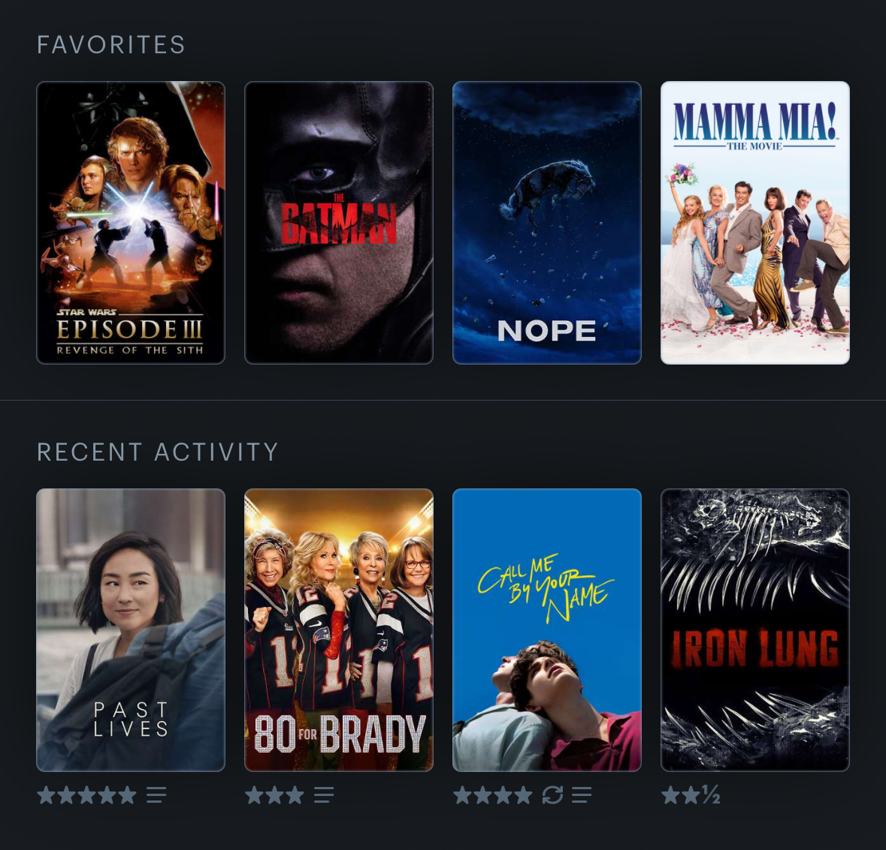
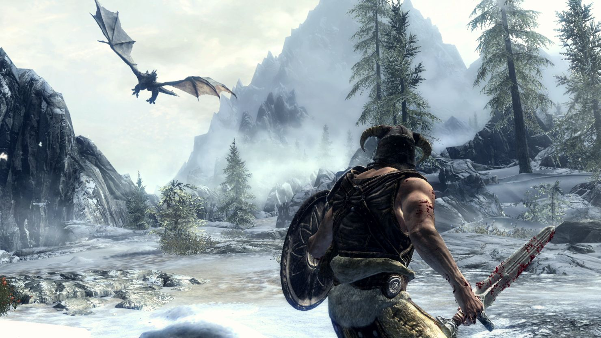
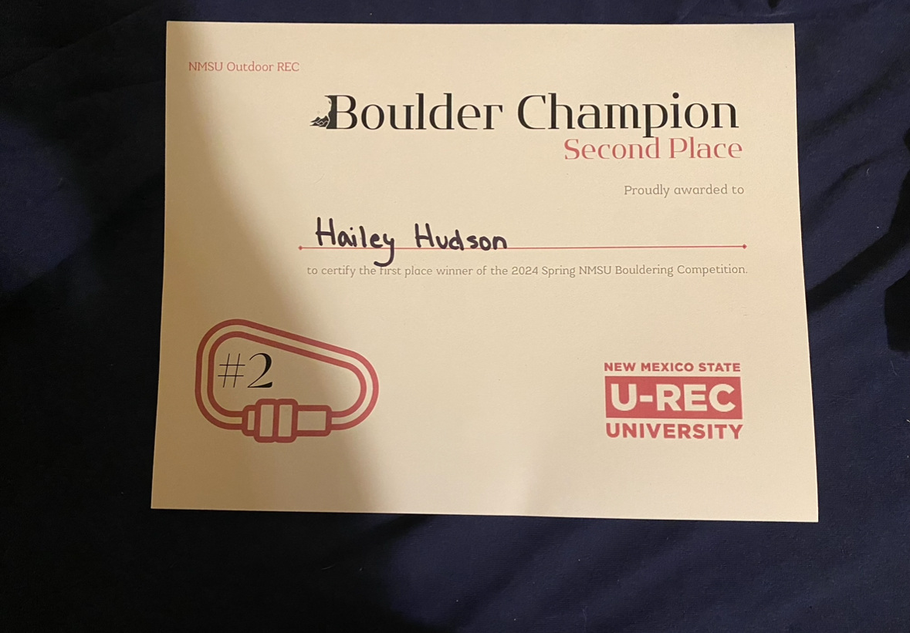

Interests
Movies
During the pandemic, I enjoyed watching new movies all of the time. Now that the theaters are open again, I try to see at least one new movie a month, but when I have more free time, I will often see at least 2 or 3 a month. I like being exposed to new art and differing perspectives, all of which movies provide. I also love movie soundtracks, so that is another reason why I love watching new movies. My 4 favorites on Letterboxd currently are Star Wars: Revenge of the Sith, The Batman, Nope, and Mamma Mia.

Video Games
I have played video games as a hobby since I was a kid, but the types of games that I enjoy has evolved as I have grown. When I started playing video games, I loved all of the Lego video games with Lego Star Wars: The Complete Saga being my favorite. As I got into Middle and High School, I played more multiplayer based video games with my friends like GTA Online, Dead by Daylight, and Minecraft. Now that I am in college and working I do not have as much time or energy to play video games but when I do, I like to play single-player story-based games. Some of my favorites are the Last of Us series, Spider-Man, Resident Evil, and Skyrim.

Rock Climbing
I started rock climbing in the spring of 2024. So far I have only done indoor/gym climbing, but soon I hope to go rock climbing outdoors. I have competed in 2 climbing competitions on campus, the top-rope competition and the bouldering competition. I placed 2nd in the beginner category at the bouldering competition and I got a certificate! I hope to continue to compete and be able to solve more complex climbing problems.
